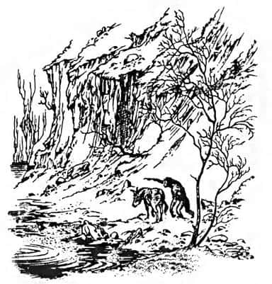
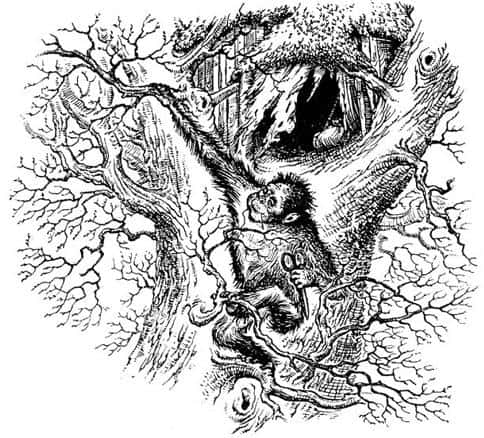
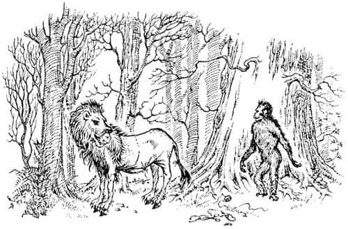

Kazan Göleti
Narnia’nın son günlerinde, batıda, Lamba Çorakları’nın çok ötesinde, Büyük Çağlayan’ın yakınlarında bir maymun yaşıyordu. O kadar yaşlıydı ki, kimse oralara ne zaman geldiğini hatırlamıyordu; hayal edebileceğiniz en kurnaz, en çirkin ve derisi en buruş buruş maymundu. Büyük bir ağacın çatalında, üstü yapraklarla örtülü ahşap bir evi vardı ve adı Külyutmaz’dı. Ormanın bu kesimlerinde, pek az konuşan hayvan, insan, cüce ya da bu türden yaratık yaşardı, fakat Külyutmaz’ın Şaşkaloz adında bir eşek arkadaşı vardı. Arkadaş olduklarını söylüyorlardı, ama Şaşkaloz aslında Külyutmaz’ın dostu olmaktan çok hizmetçisi gibiydi. Tüm işleri o yapıyordu. Beraberce nehre gittiklerinde su torbalarını Külyutmaz dolduruyor, ama Şaşkaloz taşıyordu. Nehrin aşağısındaki kasabalardan bir şey almak istediklerinde sırtında boş sepetlerle gidip, ağzına kadar dolu sepetlerle geri gelen yine Şaşkaloz oluyordu. Şaşkaloz’un getirdiği tüm iyi şeyleri Külyutmaz yiyordu; çünkü Külyutmaz, “Şaşkaloz, görüyorsun ki ben senin gibi ot ve diken yiyemem, bu yüzden bunları yiyorum, adil olan bu” diyordu. Şaşkaloz da daima, “Elbette Külyutmaz, elbette. Seni anlıyorum” diye cevap veriyordu. Şaşkaloz hiç şikâyet etmezdi, çünkü Külyutmaz’ın kendisinden çok daha akıllı olduğunu biliyordu; kendisiyle arkadaşlık etmesini nezaketine bağlıyordu. Şaşkaloz herhangi bir şey hakkında tartışmaya kalksa Külyutmaz hep, “Bak Şaşkaloz, yapılması gereken şeyi senden daha iyi biliyorum. Pek akıllı olmadığının farkındasın” derdi. Şaşkaloz da her zaman, “Evet Külyutmaz. Çok doğru. Akıllı değilim” derdi. Sonra iç çekip Külyutmaz’ın dediklerini yapardı.
Bir sabah erkenden, iki arkadaş Kazan Göleti kıyısında yürüyüşe çıkmıştı. Kazan Göleti Narnia’nın en batısındaki uçurumların hemen aşağısında yer alan büyük bir gölettir. Büyük Çağlayan gökgürültüsüne benzeyen bir sesle oraya dökülür ve öbür yandan Narnia Nehri çıkar. Çağlayan, göleti sanki kaynıyormuş gibi sürekli fokurdatır, çalkalar durur; ona Kazan Göleti denmesinin nedeni de budur. Narnia Nehri, Narnia’nın ötesindeki Vahşi Batı’dan doğar; baharla birlikte bu dağlarda eriyen kar sularının nehire karışmasıyla Büyük Çağlayan daha da coşar. Külyutmaz ve Şaşkaloz, işte o gün Kazan Göleti’ne bakarlarken Külyutmaz ince ve tüylü parmağıyla bir şeye işaret ederek:
“Şuna bak!” dedi.
“Neye, neye?” dedi Şaşkaloz.
“Az önce çağlayandan düşen şu sarı şey. Bak! İşte orada, yüzüyor. Ne olduğunu öğrenmemiz gerek.”
“Şart mı?” dedi Şaşkaloz.

“Elbette” dedi Külyutmaz. “Yararlı bir şey olabilir. İyi bir arkadaşsan suya atlar ve onu getirirsin. O zaman ne olduğunu öğrenebiliriz.”
“Suya atlamak mı?” dedi Şaşkaloz kulaklarını seğirterek.
“Sen suya atlamazsan, onu nasıl alırız?” diye sordu Maymun.
“Ama - ama” dedi Şaşkaloz, “senin gitmen daha iyi olmaz mı? Ne de olsa onun ne olduğunu öğrenmek isteyen sensin, ben pek istemiyorum. Hem senin ellerin var. Bir şeyleri yakalayıp tutmak konusunda insanlardan ya da cücelerden aşağı kalır yanın yok. Benim sadece toynaklarım var.”
“Yani Şaşkaloz” dedi Külyutmaz, “böyle bir şey söyleyeceğin hiç aklıma gelmezdi. Bunu senden beklemezdim, gerçekten.”
“Neden, yanlış bir şey mi söyledim?” dedi Eşek, oldukça yumuşak bir sesle, çünkü Külyutmaz’ın çok alındığını fark etmişti. “Demek istiyordum ki—”
“Benim suya girmemi istiyordun” dedi Maymun. “Sanki maymunların ciğerlerinin ne kadar zayıf olduğunu, ne kadar kolay soğuk algınlığına yakalandıklarını bilmezmişsin gibi! Pekâlâ. Ben girerim. Rüzgâr esiyor ve üşüyorum, ama yine de gireceğim. Büyük ihtimalle ölürüm. O zaman sen de üzülürsün.” Külyutmaz’ın sesi, neredeyse gözyaşlarına boğulacakmış gibi çıkıyordu.
“Lütfen yapma, lütfen yapma, lütfen yapma” dedi Şaşkaloz, yarı anırıp yarı konuşarak. “Öyle demek istememiştim Külyutmaz, gerçekten istememiştim. Ne kadar aptal olduğumu, aynı anda iki şeyi birden düşünemediğimi bilirsin. Ciğerlerinin zayıf olduğunu unutmuştum. Elbette ben girerim. Gölete girmeyi aklından bile geçirme. Yapmayacağına söz ver Külyutmaz.”
Külyutmaz söz verdi ve Şaşkaloz suya girebileceği bir yer bulmak üzere göletin kayalık kıyısında bir oraya bir buraya koşuşturmaya başladı. Soğuk bir yana, çalkalanan ve köpüren suya girmek şaka götürmez bir işti; Şaşkaloz bunu yapmaya karar vermeden önce tam bir dakika ayakta durup titremişti. Külyutmaz arkasından “Ben girsem belki daha iyi olur Şaşkaloz” diye bağırdı. Şaşkaloz bunu duyduğunda, “Hayır, hayır. Söz verdin. İşte giriyorum” dedi ve atladı.
Büyük bir dalga yüzüne çarpıp ağzını suyla doldurdu, etrafını göremez olmuştu. Sonra birkaç saniyeliğine tamamıyla dibe battı, suyun yüzüne çıktığında göletin bambaşka bir yerindeydi. Sonra girdaba yakalandı ve çağlayanın tam altına gelinceye kadar, gittikçe hızlanarak kendi etrafında dönmeye başladı. Onca yüksekten dökülen suyun gücü onu öylesine derinlere çekti ki, nefesinin yukarı çıkmaya yetmeyeceğini düşündü. Yüzeye çıkıp da yakalamaya çalıştığı şeyin yakınlarına geldiğindeyse, sarı şey ondan uzaklaşarak çağlayanın altına gitti ve dibe battı. Yüzeye çıktığında suya girdiği yerden çok uzakta olduğunu gördü. Yorgunluktan ölmüş, her tarafı morarmıştı, ama soğuktan donmak üzereyken o şeyi dişleriyle yakalamayı da başarmıştı. Ön bacaklarını yakaladığı şeye dolayarak dışarı çıktı. Taşıdığı şey bir halı kadar büyük ve ağırdı; ayrıca soğuk ve iğrençti.
Getirdiği şeyi Külyutmaz’ın önüne fırlattı. Titreyip nefesini toplamaya çalışarak dikildi, her yanından sular süzülüyordu. Maymun ona hiç bakmadı, nasıl olduğunu bile sormadı. O tuhaf şeyin çevresinde dolaşıp onu yalamak, koklamakla meşguldü. Sonra gözlerinde kötülük dolu bir parıltı belirdi.
“Bu bir aslan postu” dedi.
“Ee - of - of - of, öyle mi?” dedi Şaşkaloz nefes nefese.
“Şimdi acaba… acaba… acaba” dedi Külyutmaz kendi kendine, aynı zamanda derin derin düşünüyordu.
“Zavallı aslanı kim öldürdü acaba?” dedi Şaşkaloz az sonra. “Gömülmesi gerek. Bir cenaze töreni yapmalıyız.”
“Konuşan aslan değil ki” dedi Külyutmaz. “O yüzden zahmet etmene gerek yok. Çağlayanın ötesinde, Vahşi Batı’da konuşan hayvan yoktur. Post vahşi, dilsiz bir aslana ait olmalı.”
Bu doğruydu. Bir avcı, yani bir insan, aylar önce bu aslanı Vahşi Batı’da bir yerde öldürmüş ve derisini yüzmüştü. Ancak bunun bu hikâyede yeri yok.
“Hiç fark etmez Külyutmaz” dedi Şaşkaloz, “post, dilsiz ve vahşi bir aslanın postu olsa bile onun için layıkıyla bir cenaze töreni yapmamız gerekmez mi? Yani tüm aslanlar epeyce - şey, asil olmazlar mı? Hani o bildiğin biri yüzünden. Anlamıyor musun?”
“Böyle düşünceleri kafandan at Şaşkaloz” dedi Külyutmaz. “Düşünmek senin kolay altından kalkabileceğin bir şey değil. Bu posttan sana güzel bir kışlık palto yapacağız.”
“Ah, bundan hoşlanacağımı sanmıyorum” dedi eşek. “Şey gibi görünür, yani diğer hayvanlar şey diye düşünebilirler, yani demek istiyorum ki şey gibi hissetmemeliyim—”
“Ne diyorsun sen?” dedi Külyutmaz, tüm maymunların yaptığı gibi ters yönde, aşağıdan yukarıya doğru kaşınarak.
“Benim gibi bir eşek aslan postu giyip dolaşırsa, bu Aslan’a, Büyük Aslan’a yapılmış bir saygısızlık olur” dedi Şaşkaloz.
“Lütfen benimle tartışma” dedi Külyutmaz. “Senin gibi bir eşek bu tür şeyleri nereden bilecek? Düşünme konusunda iyi olmadığını biliyorsun Şaşkaloz, bırak da senin yerine ben düşüneyim. Neden bana, benim sana davrandığım gibi davranmıyorsun? Ben her şeyi yapabileceğimi düşünmüyorum. Senin bazı şeylerde benden iyi olduğunu biliyorum. Gölete girmene bu nedenle izin verdim; bunu benden daha iyi yapacağını biliyordum. Ama senin yapamayacağın ve benim yapabileceğim bir şey olduğunda neden bu fırsatı kaçırayım? Hiçbir şey yapmama izin verilmeyecek mi? Adil ol. Bu fikirden vazgeç ve farklı düşünmeye çalış.”
“Pekâlâ, eğer böyle istiyorsan” dedi Şaşkaloz.
“Bak sana ne diyeceğim” dedi Külyutmaz. “En iyisi sen nehirden aşağıya doğru, Chippingford’a kadar güzel bir koşu yap, muz ve portakalları var mı bir bak.”
“Fakat Külyutmaz, o kadar yorgunum ki” dedi Şaşkaloz.
“Evet, ama ıslaksın ve üşüyorsun” dedi Maymun. “Seni ısıtacak bir şey yapman lazım. Güzel bir koşu tam da ihtiyacın olan şey. Hem bugün Chippingford’da pazar var.” Bunu duyan Şaşkaloz gideceğini söyledi.
Külyutmaz yalnız kalır kalmaz, bazen iki, bazen de dört ayağı üzerinde yürüyerek ağacına gitti. Sürekli mırıldanıp gülümseyerek, daldan dala sallanarak küçük evine girdi. Orada iğne, iplik ve büyük bir makas buldu; akıllı bir maymundu, cücelerden dikiş dikmeyi öğrenmişti. Yumağı (çok kalın bir şeydi, iplikten çok sicime benziyordu) ağzına aldı; yanağı, ağzında koca bir bonbon varmış gibi şişti. İğneyi dudaklarının arasına koydu ve makası sol eline aldı. Sonra ağaçtan inip aslan postuna doğru yürüdü. Çömelip işe girişti.

Aslan postunun vücut kısmının Şaşkaloz için çok büyük, boyun kısmınınsa çok dar olduğunu görmüştü. Vücudun bir kısmını kesip Şaşkaloz’un uzun boynu için uzun bir yaka dikti. Sonra başı keserek yakayı omuzla başın arasına dikti. Postun iki yanına da bağcıklar koydu, böylece Şaşkaloz’un karnının altından bağlanabilecekti. Başının üzerinden bir kuş geçtiğinde Külyutmaz işini bırakıp endişeyle havalara bakıyordu. Kimsenin ne yaptığını görmesini istemiyordu. Ama gördüğü kuşların hiçbiri konuşan kuşlardan değildi, kaygılanacak bir şey yoktu.
Şaşkaloz öğleden sonra geç saatte geri geldi. Koşmuyor, eşeklerin yaptığı gibi ağır ağır yürüyordu.
“Portakal yoktu, muz da. Öyle yorgunum ki” deyip yere serildi.
“Gel de şu güzel yeni paltonu dene” dedi Külyutmaz.
“Of, boşver onu” dedi Şaşkaloz. “Yarın sabah denerim. Bu akşam çok yorgunum.”
“Hiç nazik değilsin Şaşkaloz” dedi Külyutmaz. “Yorgunsun, evet, ama benim ne kadar yorgun olduğumu tahmin bile edemezsin. Sen gün boyunca vadide aylak aylak gezerken ben sana palto dikmek için deli gibi çalıştım. Ellerim öyle yoruldu ki, şu makası zorlukla tutabiliyorum ve sen bir teşekkür bile etmiyor, paltoya bakmıyorsun, hiç umrunda değil - ve - ve—”
“Sevgili Külyutmaz” dedi Şaşkaloz, hemen ayağa kalkarak, “özür dilerim. Çok kötü davrandım. Elbette paltoyu denemek çok hoşuma gider. Gerçekten harika görünüyor. Hemen deneyelim. Lütfen.”
“Pekâlâ, kıpırdama o zaman” dedi Maymun. Post kaldıramayacağı kadar ağırdı, ama uğraşıp didinip nefes nefese, postu eşeğe giydirmeyi başardı. Postun bacaklarını Şaşkaloz’un bacaklarına, kuyruğunu kuyruğuna, vücudunu vücuduna bağladı. Aslan’ın açık duran ağzından Şaşkaloz’un yüzünün büyük bir kısmı ve gri burnu görülebiliyordu. Gerçek aslan görmüş biri buna kanmazdı. Ama aslan görmemiş biri aslan postunun içindeki Şaşkaloz’u görse, çok yakınında değilse, ışık da kötüyse, ayrıca Şaşkaloz anırmaz ve toynaklarıyla ses çıkarmazsa, onu bir aslanla karıştırabilirdi.

“Harika görünüyorsun, harika” dedi Maymun. “Şu anda birisi seni görse aslan, yani görkemli Aslan olduğunu sanır.”
“Bu çok kötü olurdu” dedi Şaşkaloz.
“Hayır, olmazdı” dedi Külyutmaz. “Herkes, senin dediğini yapardı.”
“Ben onlara bir şey yaptırmak istemiyorum ki.”
“Yapabileceğimiz iyilikleri düşün!” dedi Külyutmaz. “Akıl hocan olarak ben varım, biliyorsun. Senin vermen için akla uygun emirler düşünürüm. Herkes bize itaat etmek zorunda, Kral’ın kendisi bile. Narnia’daki her işi yoluna koyarız.”
“Her şey yolunda değil mi zaten?” dedi Şaşkaloz.
“Ne?” diye bağırdı Külyutmaz. “Her şey yolunda mı? - portakal ve muz bile yokken, ha!”
“Şey, biliyorsun” dedi Şaşkaloz, “o tür şeyleri isteyenlerin sayısı pek fazla değil; aslında, senden başkası yok sanırım.”
“Ya şeker?” dedi Külyutmaz.
“Hımmm evet” dedi Eşek. “Biraz daha fazla şeker olsa iyi olurdu.”
“Pekâlâ öyleyse, sorun çözüldü” dedi Maymun. “Sen Aslan’mış gibi davranacaksın, ne diyeceğini sana ben söyleyeceğim.”
“Hayır, hayır, hayır” dedi Şaşkaloz. “Böyle kötü şeyler söyleme. Bu doğru olmaz Külyutmaz. Çok akıllı olmayabilirim, ama o kadarını da biliyorum. Gerçek Aslan çıkıp gelirse ne olur halimiz?”
“Bence bu çok hoşuna gider” dedi Külyutmaz. “Herhalde aslan postunu her şeyi yoluna koymamız için bize o gönderdi. Neyse, biliyorsun kaç zamandır ortalarda görünmüyor. Dün yokken bugün niye çıkagelsin ki?”
O anda müthiş bir gökgürültüsü duyuldu ve yer hafif bir depremle sarsıldı. İkisi de dengesini kaybedip yüzüstü yere düştü.
“Gördün mü!” dedi Şaşkaloz, yeniden soluk almaya başlayınca. “Bir işaret bu, bir uyarı. Çok kötü bir şey yaptığımızı biliyordum. Bu körolası postu hemen üzerimden çıkar.”
“Hayır, hayır” dedi Külyutmaz (aklı çok hızlı çalışırdı). “Bu tam da zıt bir işaret. Gerçek Aslan bizim buna devam etmemizi istiyorsa bir gökgürültüsü ve yer sarsıntısı gönderir demek üzereydim. Dilimin ucundaydı, ama işaret ben söyleyemeden geldi. Artık yapmak zorundasın Şaşkaloz. Lütfen daha fazla tartışmayalım. Böyle şeylerden anlamadığını biliyorsun. Bir eşek işaretlerden ne anlar?”